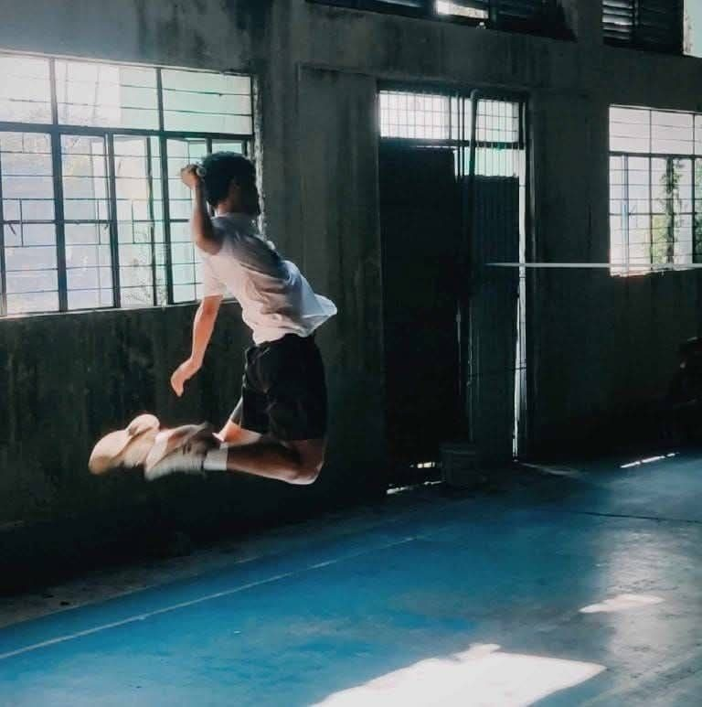
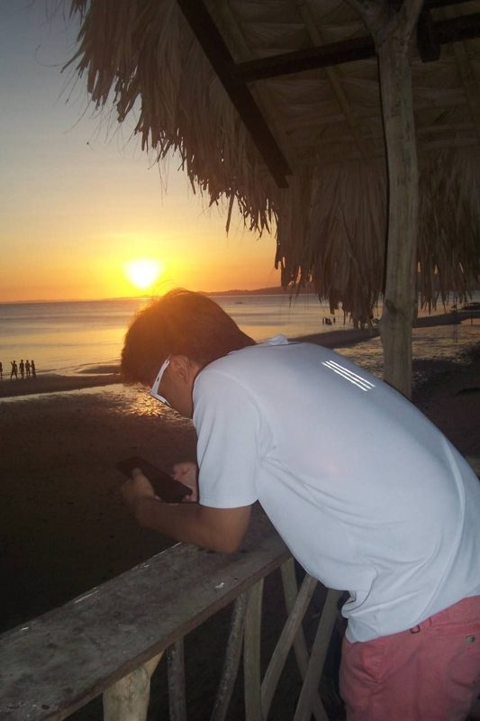
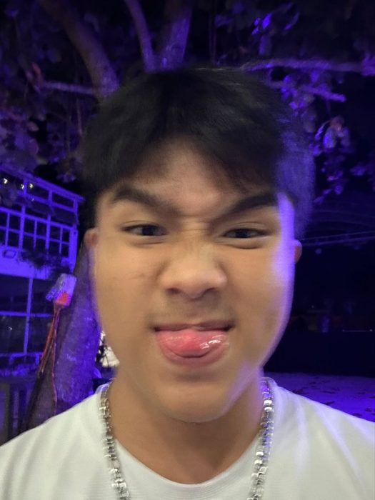

Favorite things
- Favorite activity: Playing badminton
- Favorite hobby: Video editing
- Favorite platform: YouTube
- Favorite interest: Technology and computers
- Favorite anime: One Piece (official site)
Welcome to my personal webpage! Get to know me, my interests, experiences, and goals as a Computer Science student.
I'm Van, a first-year Bachelor of Science in Computer Science student at Bicol University.
I am someone who enjoys learning new things, exploring technology, and improving myself every day.
Hi! My name is Van Esplana, and I am currently a first-year Computer Science student at Bicol University. I consider myself a curious person who enjoys learning new things and trying different activities. During my free time, I enjoy playing badminton, listening to music, and exploring things related to technology.
I am also interested in video editing and content creation. I enjoy making short-form videos and learning how to improve my editing skills. It is interesting to see how a simple video can become entertaining through good editing, captions, and creativity. I also like exploring different computer applications and learning how they work.
As a college student, I know that there are still many things I need to learn. Sometimes, studying can be challenging, especially when dealing with programming and problem-solving activities. However, I believe that practicing and being patient can help me improve. I always try to learn from my mistakes and become better at what I do.
I enjoy creating YouTube Shorts and experimenting with different editing styles.



I chose Computer Science because I want to understand how computers, software, and technology work. I am interested in learning programming and discovering how applications and websites are created. I know that this course requires patience, creativity, and logical thinking, but I am willing to learn and improve my skills.
| Skill | Level |
|---|---|
| HTML | Beginner |
| CSS | Beginner |
| Programming | Beginner |
| Video Editing | Developing |
My goal is to become more knowledgeable and skilled in Computer Science. I want to improve my programming, problem-solving, and web development skills. I also hope to create my own applications and projects someday. Aside from academics, I want to continue improving my video editing skills and become more independent. I know that achieving these goals will take time and effort, so I will keep learning and doing my best.
While creating this About Me webpage, I learned more about how HTML is used to structure and organize a website. I also understood the importance of using different HTML elements such as headings, paragraphs, images, lists, tables, and links to make a webpage more organized and informative. Compared to my previous About Me activity, I improved my webpage by adding more personal information, new sections, and elements like figures, blockquotes, and details. This activity also helped me realize that web design requires creativity, patience, and proper organization. I learned that even simple HTML elements can make a webpage more meaningful and interesting. Although I am still a beginner in web development, this project helped me improve my knowledge and become more confident in creating websites.